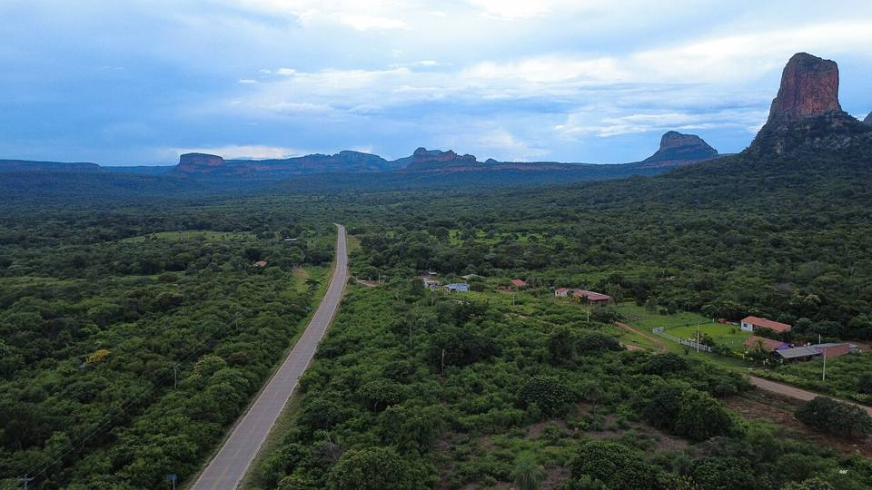
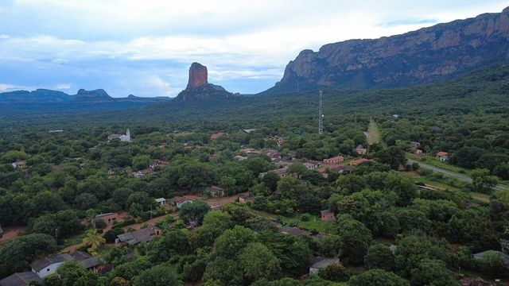
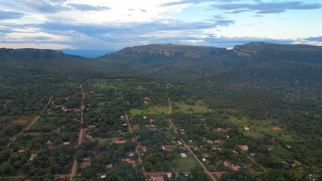
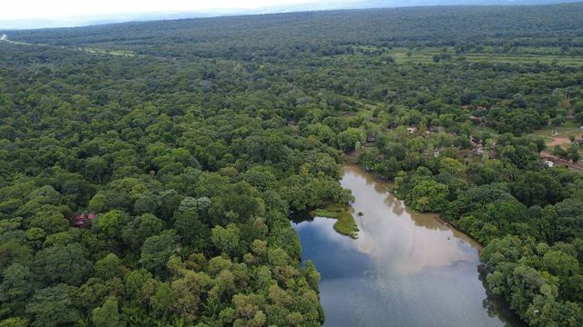

Roboré
Departamento de Santa Cruz · Naturaleza y caminatas

Roboré es un pueblo tranquilo de la Chiquitanía, en la línea del tren que va a Brasil. Se viene sobre todo por las maravillas naturales de alrededor, Santiago, Chochís y el río caliente de Aguas Calientes, y a la vuelta se disfrutan sus pozas naturales y su comida chiquitana.
Qué hacer
- Balneario Los Hoyos (pozas naturales)
- Punto de partida de excursiones a la serranía
- Comer un majadito o un locro de gallina
Qué comer
- MajaditoArroz cocido con charque o pollo, con huevo frito y plátano frito. El plato de Santa Cruz y el Beni.
- Locro de gallinaSopa espesa de arroz con gallina criolla, reconfortante, típica del Oriente.
- Cuñapé y pan de arrozPanecitos de queso con almidón de yuca o con arroz, calientes con un café en la mañana.
- Frutas tropicalesMangos, piñas, papayas, achachairú (una frutita ácida) y jugos frescos por todas partes por pocos bolivianos.
También aquí
- Frontera Puerto Quijarro – Corumbá (hacia el Pantanal)Al final de la línea de tren y de la carretera desde Santa Cruz, por Roboré. Taxi hasta la frontera y luego Corumbá, puerta del Pantanal brasileño.
Cómo llegar a Roboré
Santiago de Chiquitos Carretera (bus, auto) · 45 min
Taxi o micro desde Roboré.
Aguas Calientes Carretera (bus, auto) · 45 min
Taxi o micro desde Roboré (el tren también para ahí).
Chochís Carretera (bus, auto) · 1 h
Taxi o excursión desde Roboré.
San José Carretera (bus, auto) · 2 h 30
Buses Santa Cruz – Roboré o Puerto Quijarro que pasan por San José.
San José Tren · 3 h 30
Tren de la Ferroviaria Oriental (línea Santa Cruz – Puerto Quijarro).
Santa Cruz Tren · 9 a 10 h (de noche)
Tren nocturno de la Ferroviaria Oriental (Expreso Oriental o Ferrobus) desde la estación de Santa Cruz.
Práctico: se duerme en el tren y se llega en la mañana.
Fotos de Roboré


_-_Robor%C3%A9,_Bolivia.jpg){kind=link}


Otros lugares de la región

Chochís y la Torre de DavidUn enorme farallón rojo, la Torre de David, con un santuario a sus pies y cascadas en el valle de Tucavaca.
Santiago de ChiquitosAntiguo pueblo misional en la serranía: miradores, caminatas, cuevas y cascadas.
Aguas Calientes (río termal)Un río de agua caliente natural (unos 38 °C) en medio del bosque, para bañarse entre pececitos.